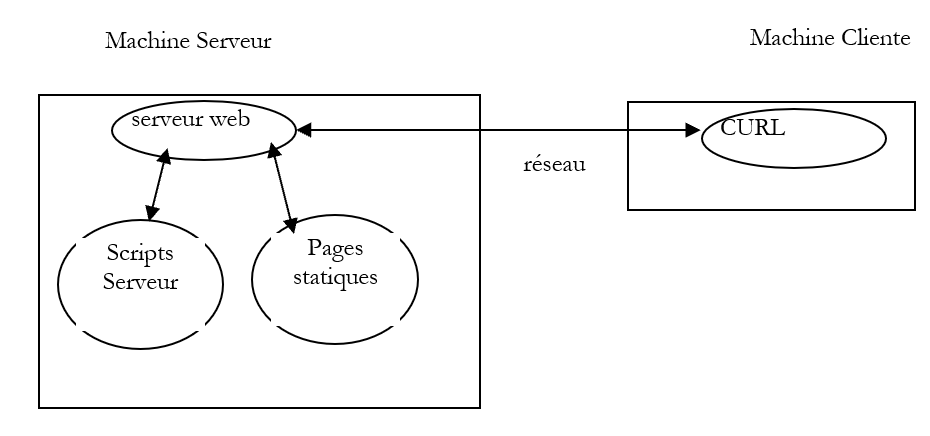
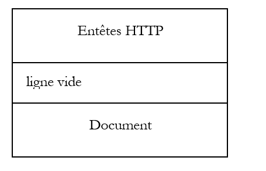
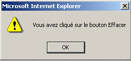
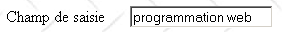

2. Conceptos básicos
En este capítulo presentamos los fundamentos de la programación web. Su objetivo principal es introducir los principios clave de la programación web, que son independientes de la tecnología específica utilizada para implementarlos. Incluye numerosos ejemplos que te animamos a probar para "absorber" gradualmente la filosofía del desarrollo web. Las herramientas gratuitas necesarias para probarlos se enumeran al final del documento, en el apéndice titulado "Herramientas web."
2.1. Componentes de una aplicación web
Servidor

15Máquina cliente
Número | Papel | Ejemplos comunes |
Servidor OS | Linux, Windows | |
Servidor web | Apache (Linux, Windows) IIS (NT), PWS (Win9x), Cassini (Windows + plataforma .NET) | |
Scripts del lado del servidor. Pueden ser ejecutados por módulos del servidor o por programas externos al servidor (CGI). | PERL (Apache, IIS, PWS) VBSCRIPT (IIS, PWS) JAVASCRIPT (IIS, PWS) PHP (Apache, IIS, PWS) JAVA (Apache, IIS, PWS) C#, VB.NET (IIS) | |
Base de datos - Puede estar en la misma máquina que el programa que la utiliza o en otra máquina a través de Internet. | Oracle (Linux, Windows) MySQL (Linux, Windows) Postgres (Linux, Windows) Acceso (Windows) servidor SQL (Windows) | |
Cliente OS | Linux, Windows | |
Navegador web | Netscape, Internet Explorer, Mozilla, Opera | |
Scripts del lado del cliente ejecutados en el navegador. Estos scripts no tienen acceso a los discos del ordenador cliente. | VBScript (IE) JavaScript (IE, Netscape) PerlScript (IE) Aplicaciones Java |
2.2. Los intercambios de datos en una aplicación web con un formulario

Máquina clienteServidor
Número | Papel |
El navegador solicita un URL por primera vez (http://machine/url). No se pasan parámetros. | |
El servidor web envía la página web para ese URL. Puede ser estática o generada dinámicamente por un script del lado del servidor (SA) que puede haber utilizado contenido de bases de datos (SB, SC). Aquí, el script detectará que el URL fue solicitado sin ningún parámetro y generará la página web inicial. El navegador recibe la página y la muestra (CA). Los scripts del navegador (CB) pueden haber modificado la página inicial enviada por el servidor. A continuación, a través de las interacciones entre el usuario (CD) y los scripts (CB), se modificará la página web. En particular, se rellenarán formularios. | |
El usuario envía los datos del formulario, que se envían al servidor web. El navegador recarga el URL original o uno diferente, según corresponda, y envía simultáneamente los valores del formulario al servidor. Para ello puede utilizar dos métodos: GET y POST. Al recibir la petición del cliente, el servidor ejecuta el script (SA) asociado al URL solicitado, que detectará los parámetros y los procesará. | |
El servidor entrega la página web generada por el programa (SA, SB, SC). Este paso es idéntico al Paso 2 anterior. La comunicación procede ahora según los Pasos 2 y 3. |
2.3. Anotaciones
En lo que sigue, supondremos que se han instalado varias herramientas y adoptaremos las siguientes notaciones:
notación | significado |
raíz del árbol de directorios del servidor Apache | |
Directorio raíz de las páginas web servidas por Apache. Las páginas web deben estar ubicadas bajo este directorio raíz. Así, el URL http://localhost/page1.htm corresponde al fichero <apache-DocumentRoot>\page1.htm. | |
Raíz del árbol de directorios asociado al cgi-bin donde se pueden colocar los scripts CGI para Apache. Así, el URL http://localhost/cgi-bin/test1.pl corresponde al fichero <apache-cgi-bin>\test1.pl. | |
El directorio raíz de las páginas web servidas por IIS, PWS o Cassini. Las páginas web deben estar ubicadas bajo este directorio raíz. Así, el directorio URL http://localhost/page1.htm corresponde al fichero <IIS-DocumentRoot>\page1.htm. | |
Raíz del árbol de directorios del lenguaje Perl. La dirección perl.exe suele encontrarse en <perl>\bin. | |
Raíz del árbol de directorios PHP. El ejecutable php.exe suele encontrarse en <php>. | |
Raíz del árbol de directorios de Java. Los ejecutables relacionados con Java se encuentran en <java>\bin. | |
Raíz del servidor Tomcat. Se pueden encontrar ejemplos de servlets en <tomcat>\webapps\ejemplos\servlets y ejemplos de páginas JSP en <tomcat>\webapps\ejemplos\jsp |
For each of these tools, refer to the appendix, which provides installation guidance.
2.4. Páginas web estáticas, páginas web dinámicas
Una página estática está representada por un archivo HTML. En cambio, una página dinámica es generada "sobre la marcha" por el servidor web. En esta sección, presentamos varias pruebas utilizando diferentes servidores web y lenguajes de programación para demostrar la universalidad del concepto web. Utilizaremos dos servidores web: Apache y IIS. Aunque IIS es un producto comercial, está disponible en dos versiones más limitadas pero gratuitas:
- PWS para máquinas Win9x
- Cassini para Windows 2000 y máquinas XP
La carpeta <IIS-DocumentRoot> suele ser la carpeta [drive:\inetpub\wwwroot], donde [drive] es el disco (C, D, ...) donde se instaló IIS. Lo mismo se aplica a PWS. Para Cassini, la carpeta <IIS-DocumentRoot> depende de cómo se inició el servidor. El apéndice muestra que el servidor Cassini puede iniciarse en una ventana DOS (o a través de un acceso directo) de la siguiente manera:
La aplicación [WebServer], también conocida como servidor web Cassini, acepta tres parámetros:
- /puerto: número de puerto del servicio web. Puede ser cualquier número. El valor por defecto es 80
- /ruta: ruta física a una carpeta del disco
- /vpath: carpeta virtual asociada a la carpeta física precedente. Tenga en cuenta que la sintaxis no es /ruta=ruta sino /rutav:ruta, contrariamente a lo que indica el panel de ayuda anterior.
If Cassini is launched as follows:
entonces la carpeta P es la raíz del árbol de directorios web del servidor Cassini. Se trata, por tanto, de la carpeta designada por <IIS-DocumentRoot>. Así, en el siguiente ejemplo
el servidor Cassini se ejecutará en el puerto 80, y la raíz de su directorio <IIS-DocumentRoot> es la carpeta [d:\data\devel\webmatrix]. Las páginas web a probar deben estar ubicadas bajo esta raíz.
En adelante, cada aplicación web estará representada por un único archivo que puede crearse con cualquier editor de texto. No se requiere IDE.
2.4.1. Página HTML estática (Lenguaje de marcado HyperText)
Considere el siguiente código HTML:
<html>
<head>
<title>essai 1 : une page statique</title>
</head>
<body>
<center>
<h1>Une page statique...</h1>
</body>
</html>
que produce la siguiente página web:
Las pruebas

Prueba1
- Iniciar el servidor Apache
- Coloque el test1.html guión en <apache-DocumentRoot>
- Ver el URL http://localhost/essai1.html en un navegador
- Detener el servidor Apache
Prueba2
- Inicie el servidor IIS/PWS/Cassini
- Coloque el guión test1.html en <IIS-DocumentRoot>
- Ver el URL http://localhost/essai1.html en un navegador
2.4.2. Una página ASP (Active Server Pages)
El script test2.asp:
<html>
<head>
<title>essai 1 : une page asp</title>
</head>
<body>
<center>
<h1>Une page asp générée dynamiquement par le serveur PWS</h1>
<h2>Il est <% =time %></h2>
<br>
A chaque fois que vous rafraîchissez la page, l'heure change.
</body>
</html>
produce la siguiente página web:

La prueba
- Inicie el servidor IIS/PWS
- Coloque el essai2.asp guión en <IIS-DocumentRoot>
- Solicitar el URL http://localhost/essai2.asp utilizando un navegador
2.4.3. A Pscript ERL (Lenguaje Práctico de Extracción e Informes)
El script essai3.pl:
#!d:\perl\bin\perl.exe
($secondes,$minutes,$heure)=localtime(time);
print <<HTML
Content-type: text/html
<html>
<head>
<title>essai 1 : un script Perl</title>
</head>
<body>
<center>
<h1>Une page générée dynamiquement par un script Perl</h1>
<h2>Il est $heure:$minutes:$secondes</h2>
<br>
A chaque fois que vous rafraîchissez la page, l'heure change.
</body>
</html>
HTML
;
La primera línea es la ruta al archivo perl.exe ejecutable. Es posible que tenga que ajustarlo si es necesario. Una vez ejecutado por un servidor web, el script produce la siguiente página:

En
- Servidor web: Apache
- Como referencia, consulte el srm.conf o httpd.conf (dependiendo de su versión de Apache) en <apache>\confs y busque la línea que menciona cgi-bin para determinar el <apache-cgi-bin> donde debe colocar essai3.pl.
- Coloque el essai3.pl guión en <apache-cgi-bin>
- Solicitar el URL http://localhost/cgi-bin/essai3.pl
Tenga en cuenta que se tarda más en cargar el Perl que la página ASP página. Esto se debe a que el script Perl es ejecutado por un intérprete Perl que debe cargarse antes de poder ejecutar el script. No permanece en memoria permanentemente.
2.4.4. Una secuencia de comandos PHP
El script essai4.php
<html>
<head>
<title>essai 4 : une page php</title>
</head>
<body>
<center>
<h1>Une page PHP générée dynamiquement</h1>
<h2>
<?
$maintenant=time();
echo date("j/m/y, h:i:s",$maintenant);
?>
</h2>
<br>
A chaque fois que vous rafraîchissez la page, l'heure change.
</body>
</html>
El script anterior genera la siguiente página web:

Pruebas
Prueba1
- Compruebe el srm.conf o el archivo de configuración de Apache httpd.conf en <Apache>\confs
- For reference, check the PHP configuration lines
- Iniciar el servidor Apache
- Lugar essai4.php en <apache-DocumentRoot>
- Solicitar el URL http://localhost/essai4.php
Prueba2
- Inicie el servidor IIS/PWS
- For reference, check the PWS configuration regarding PHP
- Lugar essai4.php en <IIS-DocumentRoot>\php
- Solicitar el URL http://localhost/essai4.php
2.4.5. A JSP script
El script heure.jsp
<% //programme Java affichant l'heure %>
<%@ page import="java.util.*" %>
<%
// code JAVA pour calculer l'heure
Calendar calendrier=Calendar.getInstance();
int heures=calendrier.get(Calendar.HOUR_OF_DAY);
int minutes=calendrier.get(Calendar.MINUTE);
int secondes=calendrier.get(Calendar.SECOND);
// heures, minutes, secondes sont des variables globales
// qui pourront être utilisées dans le code HTML
%>
<% // code HTML %>
<html>
<head>
<title>Page JSP affichant l'heure</title>
</head>
<body>
<center>
<h1>Une page JSP générée dynamiquement</h1>
<h2>Il est <%=heures%>:<%=minutes%>:<%=secondes%></h2>
<br>
<h3>A chaque fois que vous rechargez la page, l'heure change</h3>
</body>
</html>
Una vez ejecutado por el servidor web, este script produce la siguiente página:

Las pruebas
- Coloque el heure.jsp guión en <tomcat>\jakarta-tomcat\webapps\ejemplos\jsp (Tomcat 3.x) o en <tomcat>\webapps\ejemplos\jsp (Tomcat 4.x)
- Inicie el servidor Tomcat
- Solicitar el URL http://localhost:8080/examples/jsp/heure.jsp
2.4.6. Una página ASP.NET
En heure1.aspx guión:
<html>
<head>
<title>Démo asp.net </title>
</head>
<body>
Il est <% =Date.Now.ToString("hh:mm:ss") %>
</body>
</html>
Una vez ejecutado por el servidor web, este script genera la siguiente página:

Esta prueba requiere una máquina Windows en la que se haya instalado la plataforma .NET (véase el apéndice).
- Coloque el heure1.aspx guión en <IIS-DocumentRoot>
- Inicie el servidor IIS/CASSINI
- Solicitar el URL http://localhost/heure1.aspx
2.4.7. Conclusión
Los ejemplos anteriores lo han demostrado:
- una página HTML puede ser generada dinámicamente por un programa. Este es el objetivo de la programación web.
- los idiomas y servidores web utilizados pueden variar. Actualmente, se observan las siguientes tendencias principales:
- las combinaciones Apache/PHP (Windows, Linux) y IIS/PHP (Windows)
- tecnología ASP.NET en plataformas Windows, que combina el servidor IIS con un lenguaje .NET (C#, VB.NET, etc.)
- Tecnología Java servlet y páginas JSP ejecutándose en varios servidores (Tomcat, Apache, IIS) y en varias plataformas (Windows, Linux).
2.5. Scripts del navegador
Una página HTML puede contener scripts que serán ejecutados por el navegador. Existen muchos lenguajes de scripting del lado del navegador. He aquí algunos:
Idioma | Navegadores compatibles |
VBScript | IE |
JavaScript | IE, Netscape |
PerlScript | IE |
Java | IE, Netscape |
Veamos algunos ejemplos.
2.5.1. Una página web con un script VBScript, en el lado del navegador
La página vbs1.html
<html>
<head>
<title>essai : une page web avec un script vb</title>
<script language="vbscript">
function reagir
alert "Vous avez cliqué sur le bouton OK"
end function
</script>
</head>
<body>
<center>
<h1>Une page Web avec un script VB</h1>
<table>
<tr>
<td>Cliquez sur le bouton</td>
<td><input type="button" value="OK" name="cmdOK" onclick="reagir"></td>
</tr>
</table>
</body>
</html>
La página HTML anterior no sólo contiene código HTML sino también un programa destinado a ser ejecutado por el navegador que carga esta página. El código es el siguiente:
<script language="vbscript">
function reagir
alert "Vous avez cliqué sur le bouton OK"
end function
</script>
En <script></script> se utilizan para delimitar scripts dentro de una página HTML. Estos scripts pueden estar escritos en varios idiomas, y las etiquetas idioma del atributo <script> especifica el idioma utilizado. En este caso, es VBScript. No entraremos en detalles sobre este lenguaje. El script anterior define una función llamada reaccionar que muestra un mensaje. ¿Cuándo se llama a esta función? La siguiente línea de código HTML nos lo indica:
En onclick especifica el nombre de la función que se invocará cuando el usuario pulse el botón OK. Una vez que el navegador haya cargado esta página y el usuario haga clic en el botón OK, aparecerá la siguiente página:

Pruebas
Sólo Internet Explorer es capaz de ejecutar scripts VBScript. Netscape necesita complementos para hacerlo. Podemos realizar las siguientes pruebas:
- Servidor Apache
- vbs1.html guión en <apache-DocumentRoot>
-
Solicitar el URL http://localhost/vbs1.html con Internet Explorer
-
IIS/PWS server
- vbs1.html guión en <pws-RaízDocumento>
- Solicitar el URL http://localhost/vbs1.html con Internet Explorer
Una página web con un script JavaScript, en el lado del navegador
La page : js1.html
<html>
<head>
<title>essai 4 : une page web avec un script Javascript</title>
<script language="javascript">
function reagir(){
alert ("Vous avez cliqué sur le bouton OK");
}
</script>
</head>
<body>
<center>
<h1>Une page Web avec un script Javascript</h1>
<table>
<tr>
<td>Cliquez sur le bouton</td>
<td><input type="button" value="OK" name="cmdOK" onclick="reagir()"></td>
</tr>
</table>
</body>
</html>
Esta página es idéntica a la anterior, salvo que hemos sustituido VBScript por JavaScript. JavaScript tiene la ventaja de ser compatible tanto con Internet Explorer como con Netscape. La ejecución de este código produce los mismos resultados:

Las pruebas
- Servidor Apache
- js1.html guión en <apache-DocumentRoot>
-
Solicitar el URL http://localhost/js1.html con Internet Explorer o Netscape
-
IIS/PWS server
- js1.html guión en <pws-RaízDocumento>
- Solicitar el URL http://localhost/js1.html con Internet Explorer o Netscape
2.6. Comunicación cliente-servidor
Volvamos a nuestro diagrama inicial que ilustra los componentes de una aplicación web:

Máquina servidor
Aquí nos centraremos en los intercambios entre la máquina cliente y la máquina servidor. Éstos se producen a través de una red, y merece la pena repasar la estructura general de los intercambios entre dos máquinas remotas.
2.6.1. El modelo OSI
El modelo de red abierta conocido como el OSI (Modelo de referencia de interconexión de sistemas abiertos), definido por el ISO (Organización Internacional de Normalización), describe una red ideal en la que la comunicación entre máquinas puede representarse mediante un modelo de siete capas:

Cada capa recibe servicios de la capa inferior y proporciona sus propios servicios a la capa superior. Supongamos que dos aplicaciones situadas en máquinas diferentes A y B quieren comunicarse: lo hacen en la capa Aplicación capa. No necesitan conocer todos los detalles del funcionamiento de la red: cada aplicación pasa la información que desea transmitir a la capa inferior: la capa Presentación . Por lo tanto, la aplicación sólo necesita conocer las reglas para interactuar con la capa Presentación capa. Una vez que la información está en la capa Presentación se pasa según otras reglas a la capa Sesión y así sucesivamente, hasta que la información llega al medio físico y se transmite físicamente a la máquina de destino. Allí, sufrirá el proceso inverso al que sufrió en la máquina emisora.
En cada capa, el proceso emisor responsable de enviar la información la envía a un proceso receptor en la otra máquina que pertenece a la misma capa que él. Lo hace siguiendo unas reglas conocidas como capa protocolo. Por lo tanto, tenemos el siguiente diagrama de comunicación final:

Las funciones de las distintas capas son las siguientes:
Garantiza la transmisión de bits a través de un medio físico. Este nivel incluye equipos terminales de procesamiento de datos (DPTE) como terminales u ordenadores, así como equipos de terminación de circuitos de datos (DCTE) como moduladores/demoduladores, multiplexores y concentradores. Los puntos clave en este nivel son: . la elección de la codificación de la información (analógica o digital) . la elección del modo de transmisión (síncrono o asíncrono). | |
Oculta las características físicas de la capa física. Detecta y corrige los errores de transmisión. | |
Gestiona la ruta que debe seguir la información enviada a través de la red. Se denomina enrutamiento: determinar la ruta que debe seguir la información para llegar a su destino. | |
Permite la comunicación entre dos aplicaciones, mientras que las capas anteriores sólo permitían la comunicación entre máquinas. Un servicio prestado por esta capa puede ser la multiplexación: la capa de transporte puede utilizar una única conexión de red (de máquina a máquina) para transmitir datos pertenecientes a varias aplicaciones. | |
Esta capa proporciona servicios que permiten a una aplicación abrir y mantener una sesión de trabajo en una máquina remota. | |
Su objetivo es normalizar la representación de los datos en diferentes máquinas. Así, los datos procedentes de la máquina A serán "formateados" por la máquina A Presentación de acuerdo con un formato estándar antes de ser enviado a través de la red. Al llegar a la capa Presentación de la máquina B de destino, que los reconocerá gracias a su formato estándar, se formatearán de manera diferente para que la aplicación de la máquina B pueda reconocerlos. | |
En este nivel encontramos aplicaciones generalmente cercanas al usuario, como el correo electrónico o la transferencia de archivos. |
2.6.2. El modelo TCP/__TECHTERM_1
El modelo OSI es un modelo ideal. El conjunto de protocolos TCP/IP se aproxima a él de la siguiente manera:

- la interfaz de red (la tarjeta de red del ordenador) realiza las funciones de las capas 1 y 2 del modelo OSI
- el IP (Protocolo de Internet) realiza las funciones de la capa 3 (red)
- el TCP (Protocolo de Control de Transmisión) o UDP (Protocolo de Datagramas de Usuario) realiza las funciones de la capa 4 (transporte). El protocolo TCP garantiza que los paquetes de datos intercambiados entre máquinas lleguen a su destino. En caso contrario, reenvía los paquetes perdidos. El protocolo UDP no realiza esta tarea, por lo que corresponde al desarrollador de la aplicación hacerlo. Por eso, en Internet -que no es una red 100% fiable- el protocolo TCP es el más utilizado. Es lo que se conoce como TCP-IP red.
- En Aplicación cubre las funciones de las capas 5 a 7 del modelo OSI.
Las aplicaciones web residen en el Aplicación y, por tanto, dependen de los protocolos TCP/IP. La dirección Aplicación de las máquinas cliente y servidor intercambian mensajes, que luego pasan a las capas 1 a 4 del modelo para ser encaminados a su destino. Para comunicarse entre sí, las capas de aplicación de ambas máquinas deben "hablar" el mismo lenguaje o protocolo. El protocolo utilizado por las aplicaciones web se denomina HTTP (Protocolo de transferencia HyperText). Es un protocolo basado en texto, lo que significa que las máquinas intercambian líneas de texto a través de la red para comunicarse. Estos intercambios están estandarizados, lo que significa que el cliente tiene un conjunto de mensajes para decirle al servidor exactamente lo que quiere, y el servidor también tiene un conjunto de mensajes para proporcionar al cliente su respuesta. Este intercambio de mensajes tiene la siguiente forma:

Cliente --> Servidor
Cuando el cliente realiza una petición al servidor web, envía
- líneas de texto en formato HTTP para indicar lo que desea
- una línea vacía
- opcionalmente un documento
Servidor --> Cliente
Cuando el servidor responde al cliente, envía
- líneas de texto en formato HTTP para indicar lo que envía
- una línea vacía
- opcionalmente un documento
Por tanto, las comunicaciones siguen el mismo formato en ambas direcciones. En ambos casos se puede enviar un documento, aunque es raro que un cliente envíe un documento al servidor. Pero el protocolo HTTP lo permite. Esto es lo que permite, por ejemplo, a los abonados de un ISP subir diversos documentos a su sitio web personal alojado en ese ISP. Los documentos intercambiados pueden ser de cualquier tipo. Pensemos en un navegador que solicita una página web que contiene imágenes:
- el navegador se conecta al servidor web y solicita la página que desea. Los recursos solicitados se identifican unívocamente mediante URLs (localizadores uniformes de recursos). El navegador sólo envía cabeceras HTTP y ningún documento.
- El servidor responde. Primero envía cabeceras HTTP indicando qué tipo de respuesta está enviando. Puede tratarse de un error si la página solicitada no existe. Si la página existe, el servidor indicará en las cabeceras HTTP de su respuesta que enviará un HTML (HyperText Markup Language). Este documento es una secuencia de líneas de texto en formato HTML. el texto HTML contiene etiquetas (marcadores) que proporcionan al navegador instrucciones sobre cómo mostrar el texto.
- El cliente sabe por las cabeceras HTTP del servidor que recibirá un documento HTML. Analizará este documento y observará que contiene referencias a imágenes. Estas imágenes no están incluidas en el documento HTML. Por lo tanto, realiza una nueva petición al mismo servidor web para solicitar la primera imagen que necesita. Esta petición es idéntica a la realizada en el paso 1, salvo que el recurso solicitado es diferente. El servidor procesará esta petición enviando al cliente la imagen solicitada. Esta vez, en su respuesta, las cabeceras HTTP especificarán que el documento enviado es una imagen y no un documento HTML.
- El cliente recupera la imagen enviada. Los pasos 3 y 4 se repetirán hasta que el cliente (normalmente un navegador) disponga de todos los documentos necesarios para mostrar la página completa.
2.6.3. El protocolo HTTP
Exploremos el protocolo HTTP a través de ejemplos. ¿Qué intercambian un navegador y un servidor web?
2.6.3.1. La respuesta de un servidor HTTP
Aquí exploraremos cómo un servidor web responde a las peticiones de sus clientes. El servicio Web o servicio HTTP es un servicio TCP/IP que típicamente opera en el puerto 80. Podría operar en un puerto diferente. En ese caso, el navegador cliente tendría que especificar ese puerto en el URL que solicita. Un URL generalmente sigue este formato:
donde
protocolo | http para el servicio web. Un navegador también puede actuar como cliente para FTP, noticias, Telnet y otros servicios. |
máquina | nombre de la máquina que aloja el servicio web |
puerto | Puerto del servicio web. Si es 80, se puede omitir el número de puerto. Este es el caso más común |
ruta | ruta al recurso solicitado |
información | información adicional proporcionada al servidor para especificar la solicitud del cliente |
¿Qué hace un navegador cuando un usuario solicita que se cargue un URL?
- Establece una conexión TCP/IP con la máquina y el puerto especificados en el campo máquina[:puerto] parte del URL. Establecer una conexión TCP/IP significa crear un "canal" de comunicación entre dos máquinas. Una vez establecido este canal, toda la información intercambiada entre las dos máquinas pasará a través de él. En la creación de esta tubería TCP-IP aún no interviene el protocolo HTTP de la Web.
- Una vez establecida la conexión TCP-IP, el cliente envía su petición al servidor web enviando líneas de texto (comandos) en formato HTTP. Envía los ruta/info parte del URL al servidor
- El servidor responderá de la misma manera y a través de la misma conexión
- Una de las dos partes decidirá cerrar la conexión. Esto depende del protocolo HTTP utilizado. Con HTTP 1.0, el servidor cierra la conexión después de cada una de sus respuestas. Esto obliga a un cliente que necesita realizar varias peticiones para recuperar los distintos documentos que componen una página web a abrir una nueva conexión para cada petición, lo que incurre en un coste. Con el protocolo HTTP/1.1, el cliente puede indicar al servidor que mantenga la conexión abierta hasta que le diga que la cierre. De este modo, puede recuperar todos los documentos de una página web utilizando una única conexión y cerrar la propia conexión una vez obtenido el último documento. El servidor detectará este cierre y cerrará también la conexión.
Para examinar los intercambios entre un cliente y un servidor web, utilizaremos una herramienta llamada rizo. Curl es una aplicación DOS que permite actuar como cliente de servicios de Internet que soportan diversos protocolos (HTTP, FTP, TELNET, GOPHER, etc.). Curl está disponible en el URL http://curl.haxx.se/. En este caso, descargaremos preferentemente la versión para Windows win32-nossl, ya que la versión win32-ssl requiere DLLs adicionales no incluidos en el paquete curl. Este paquete contiene un conjunto de ficheros que simplemente hay que extraer en una carpeta que a partir de ahora llamaremos <curl>. Esta carpeta contiene un archivo ejecutable llamado [curl.exe]. Este será nuestro cliente para consultar servidores web. Abra una ventana de símbolo del sistema y vaya a la carpeta <curl>:
dos>dir curl.exe
22/03/2004 13:29 299 008 curl.exe
E:\curl2>curl
curl: try 'curl --help' for more information
dos>curl --help | more
Usage: curl [options...] <url>
Options: (H) means HTTP/HTTPS only, (F) means FTP only
-a/--append Append to target file when uploading (F)
-A/--user-agent <string> User-Agent to send to server (H)
--anyauth Tell curl to choose authentication method (H)
-b/--cookie <name=string/file> Cookie string or file to read cookies from (H)
--basic Enable HTTP Basic Authentication (H)
-B/--use-ascii Use ASCII/text transfer
-c/--cookie-jar <file> Write cookies to this file after operation (H)
....
Utilicemos esta aplicación para consultar un servidor web y examinar los intercambios entre el cliente y el servidor. Nos encontraremos en la siguiente situación

El servidor web puede ser cualquiera. Aquí, nuestro objetivo es descubrir los intercambios que se producirán entre el cliente web curl y el servidor web. Previamente, hemos creado la siguiente página estática HTML:
<html>
<head>
<title>essai 1 : une page statique</title>
</head>
<body>
<center>
<h1>Une page statique...</h1>
</body>
</html>
que vemos en un navegador:

Podemos ver que el URL solicitado es: http://localhost/aspnet/chap1/statique1.html. Por lo tanto, el servidor web localhost (=máquina local) en el puerto 80. Si vemos el HTML fuente de esta página web (Ver/Fuente), vemos el HTML texto que se creó originalmente:

Ahora usemos nuestro cliente CURL para solicitar el mismo URL:
dos>curl http://localhost/aspnet/chap1/statique1.html
<html>
<head>
<title>essai 1 : une page statique</title>
</head>
<body>
<center>
<h1>Une page statique...</h1>
</body>
</html>
Podemos ver que el servidor web le envió un conjunto de líneas de texto que representan el código HTML de la página solicitada. Hemos mencionado anteriormente que la respuesta de un servidor web toma la forma:

Sin embargo, aquí no vimos las cabeceras HTTP. Esto se debe a que [curl] no las muestra por defecto. La dirección --incluir le permite visualizarlos:
E:\curl2>curl --include http://localhost/aspnet/chap1/statique1.html
HTTP/1.1 200 OK
Server: Microsoft ASP.NET Web Matrix Server/0.6.0.0
Date: Mon, 22 Mar 2004 16:51:00 GMT
X-AspNet-Version: 1.1.4322
Cache-Control: public
ETag: "1C4102CEE8C6400:1C4102CFBBE2250"
Content-Type: text/html
Content-Length: 161
Connection: Close
<html>
<head>
<title>essai 1 : une page statique</title>
</head>
<body>
<center>
<h1>Une page statique...</h1>
</body>
</html>
Efectivamente, el servidor envió una serie de cabeceras HTTP seguidas de una línea en blanco:
HTTP/1.1 200 OK
Server: Microsoft ASP.NET Web Matrix Server/0.6.0.0
Date: Mon, 22 Mar 2004 16:51:00 GMT
X-AspNet-Version: 1.1.4322
Cache-Control: public
ETag: "1C4102CEE8C6400:1C4102CFBBE2250"
Content-Type: text/html
Content-Length: 161
Connection: Close
el servidor dice
| |
el servidor se identifica. Aquí es un servidor Cassini | |
la fecha/hora de la respuesta | |
encabezado específico del servidor Cassini | |
proporciona al cliente información sobre si la respuesta que se le envía puede almacenarse en caché. El atributo [public] indica al cliente que puede almacenar en caché la página. Un atributo [no-cache] habría indicado al cliente que no debe almacenar la página en caché. | |
... | |
El servidor indica que enviará el texto en formato HTML. | |
El número de bytes del documento que se enviarán después de las cabeceras HTTP. Este número es en realidad el tamaño en bytes del archivo essai1.html: | |
el servidor indica que cerrará la conexión una vez enviado el documento |
El cliente recibe estas cabeceras HTTP y ahora sabe que recibirá 161 bytes que representan un documento HTML. El servidor envía estos 161 bytes inmediatamente después de la línea en blanco que señalaba el final de las cabeceras HTTP:
<html>
<head>
<title>essai 1 : une page statique</title>
</head>
<body>
<center>
<h1>Une page statique...</h1>
</body>
</html>
Aquí vemos el fichero HTML tal y como fue construido originalmente. Si nuestro cliente fuera un navegador, tras recibir estas líneas de texto, las interpretaría para mostrar la siguiente página al usuario:
Usemos de nuevo nuestro cliente [curl] para solicitar el mismo recurso, pero esta vez pidiendo sólo las cabeceras de respuesta:
dos>curl --head http://localhost/aspnet/chap1/statique1.html
HTTP/1.1 200 OK
Server: Microsoft ASP.NET Web Matrix Server/0.6.0.0
Date: Tue, 23 Mar 2004 07:11:54 GMT
Cache-Control: public
ETag: "1C410A504D60680:1C410A58621AD3E"
Content-Type: text/html
Content-Length: 161
Connection: Close
Obtenemos el mismo resultado que antes sin el documento HTML. Ahora vamos a solicitar una imagen utilizando tanto un navegador como el cliente genérico TCP. Primero, usando un navegador:

El expediente univ01.gif es de 4052 bytes:
Ahora usemos el cliente [curl]:
dos>curl --head http://localhost/aspnet/chap1/univ01.gif
HTTP/1.1 200 OK
Server: Microsoft ASP.NET Web Matrix Server/0.6.0.0
Date: Tue, 23 Mar 2004 07:18:44 GMT
Cache-Control: public
ETag: "1C410A6795D7500:1C410A6868B1476"
Content-Type: image/gif
Content-Length: 4052
Connection: Close
Tenga en cuenta los siguientes puntos en el ciclo solicitud-respuesta anterior:
| |
| |
|
2.6.3.2. La solicitud de un cliente HTTP
Ahora, hagámonos la siguiente pregunta: si queremos escribir un programa que "hable" con un servidor web, ¿qué comandos debe enviar al servidor web para obtener un determinado recurso? En los ejemplos anteriores, vimos lo que el cliente recibía pero no lo que el cliente enviaba. Usaremos la opción [--verbose] de curl para ver también lo que el cliente envía al servidor. Comencemos solicitando la página estática:
dos>curl --verbose http://localhost/aspnet/chap1/statique1.html
* About to connect() to localhost:80
* Connected to portable1_tahe (127.0.0.1) port 80
> GET /aspnet/chap1/statique1.html HTTP/1.1
User-Agent: curl/7.10.8 (win32) libcurl/7.10.8 OpenSSL/0.9.7a zlib/1.1.4
Host: localhost
Pragma: no-cache
Accept: image/gif, image/x-xbitmap, image/jpeg, image/pjpeg, */*
< HTTP/1.1 200 OK
< Server: Microsoft ASP.NET Web Matrix Server/0.6.0.0
< Date: Tue, 23 Mar 2004 07:37:06 GMT
< Cache-Control: public
< ETag: "1C410A504D60680:1C410A58621AD3E"
< Content-Type: text/html
< Content-Length: 161
< Connection: Close
<html>
<head>
<title>essai 1 : une page statique</title>
</head>
<body>
<center>
<h1>Une page statique...</h1>
</body>
</html>
* Closing connection #0
En primer lugar, el cliente [curl] establece una conexión TCP/IP al puerto 80 en la máquina localhost (=127.0.0.1)
Una vez establecida la conexión, envía su petición HTTP. Se trata de una secuencia de líneas de texto que termina con una línea en blanco:
GET /aspnet/chap1/statique1.html HTTP/1.1
User-Agent: curl/7.10.8 (win32) libcurl/7.10.8 OpenSSL/0.9.7a zlib/1.1.4
Host: localhost
Pragma: no-cache
Accept: image/gif, image/x-xbitmap, image/jpeg, image/pjpeg, */*
La petición HTTP de un cliente web tiene dos funciones:
- para especificar el recurso deseado. Esta es la función de la primera línea, GET
- para proporcionar información sobre el cliente que realiza la solicitud, de modo que el servidor pueda adaptar su respuesta a este tipo específico de cliente.
El significado de las líneas enviadas arriba por el cliente [curl] es el siguiente:
para solicitar un recurso determinado utilizando una versión específica del protocolo HTTP. El servidor envía una respuesta en formato HTTP seguida de una línea en blanco seguida del recurso solicitado | |
indicar quién es el cliente | |
para especificar (protocolo HTTP 1.1) la máquina y el puerto del servidor web consultado | |
aquí para especificar que el cliente no admite el almacenamiento en caché. | |
tipos MIME que especifican los tipos de archivo que el cliente puede manejar |
Intentemos de nuevo la operación con la opción --head de [curl]:
dos>curl --verbose --head --output reponse.txt http://localhost/aspnet/chap1/statique1.html
* About to connect() to localhost:80
* Connected to portable1_tahe (127.0.0.1) port 80
> HEAD /aspnet/chap1/statique1.html HTTP/1.1
User-Agent: curl/7.10.8 (win32) libcurl/7.10.8 OpenSSL/0.9.7a zlib/1.1.4
Host: localhost
Pragma: no-cache
Accept: image/gif, image/x-xbitmap, image/jpeg, image/pjpeg, */*
< HTTP/1.1 200 OK
< Server: Microsoft ASP.NET Web Matrix Server/0.6.0.0
< Date: Tue, 23 Mar 2004 07:54:22 GMT
< Cache-Control: public
< ETag: "1C410A504D60680:1C410A58621AD3E"
< Content-Type: text/html
< Content-Length: 161
< Connection: Close
Nos centraremos únicamente en las cabeceras HTTP enviadas por el cliente:
HEAD /aspnet/chap1/statique1.html HTTP/1.1
User-Agent: curl/7.10.8 (win32) libcurl/7.10.8 OpenSSL/0.9.7a zlib/1.1.4
Host: localhost
Pragma: no-cache
Accept: image/gif, image/x-xbitmap, image/jpeg, image/pjpeg, */*
Sólo ha cambiado el comando que solicita el recurso. En lugar de un comando GET, ahora tenemos un comando HEAD. Este comando solicita que la respuesta del servidor se limite a las cabeceras HTTP y que no envíe el recurso solicitado. La captura de pantalla anterior no muestra las cabeceras HTTP recibidas. Éstas se guardaron en un archivo utilizando la opción [--output response.txt] del comando [curl]:
dos>more reponse.txt
HTTP/1.1 200 OK
Server: Microsoft ASP.NET Web Matrix Server/0.6.0.0
Date: Tue, 23 Mar 2004 07:54:22 GMT
Cache-Control: public
ETag: "1C410A504D60680:1C410A58621AD3E"
Content-Type: text/html
Content-Length: 161
Connection: Close
2.6.4. Conclusión
Hemos examinado la estructura de la petición de un cliente web y la respuesta del servidor web a la misma utilizando algunos ejemplos. La comunicación tiene lugar mediante el protocolo HTTP, un conjunto de comandos basados en texto que se intercambian las dos partes. La petición del cliente y la respuesta del servidor comparten la siguiente estructura:

En el caso de una solicitud de cliente (a menudo llamada consulta), la sección [Documento] suele estar ausente. Sin embargo, es posible que un cliente envíe un documento al servidor. Para ello utiliza un comando llamado PUT. Los dos comandos habituales para solicitar un recurso son GET y POST. De este último hablaremos más adelante. El comando HEAD se utiliza para solicitar sólo las cabeceras HTTP. Los comandos GET y POST son los más utilizados por los clientes web basados en navegador.
En respuesta a la petición de un cliente, el servidor envía una respuesta con la misma estructura. El recurso solicitado se transmite en la sección [Document] a menos que la orden del cliente haya sido HEAD, en cuyo caso sólo se envían las cabeceras HTTP.
2.7. HTML
Un navegador web puede mostrar varios documentos, siendo el más común el documento HTML (HyperText Markup Language). Se trata de un texto formateado que utiliza etiquetas de la forma <tag>texto</tag>. Así, el texto <B>importante</B> mostrará el texto "importante" en negrita. Existen etiquetas independientes como etiqueta, que muestra una línea horizontal. No vamos a repasar todas las etiquetas que se pueden encontrar en un texto HTML. Existen muchos programas de software WYSIWYG que permiten construir una página web sin escribir una sola línea de código HTML. Estas herramientas generan automáticamente el código HTML para un diseño creado con el ratón y controles predefinidos. De este modo, puede insertar (con el ratón) una tabla en la página y, a continuación, ver el código HTML generado por el software para descubrir las etiquetas que debe utilizar para definir una tabla en una página web. Así de sencillo. Además, el conocimiento de HTML es esencial, ya que las aplicaciones web dinámicas deben generar ellas mismas el código HTML para enviarlo a los clientes web. Este código se genera mediante programación y, por supuesto, hay que saber qué generar para que el cliente reciba la página web que desea.
En resumen, no es necesario conocer todo el lenguaje HTML para iniciarse en la programación web. Sin embargo, este conocimiento es necesario y se puede adquirir mediante el uso de WYSIWYG creadores de páginas web como Word, FrontPage, DreamWeaver y docenas de otros. Otra forma de descubrir los entresijos de HTML es navegar por la web y ver el código fuente de páginas que presenten elementos interesantes que no hayas encontrado antes.
2.7.1. Un ejemplo
Considere el siguiente ejemplo, creado con FrontPage Express, una herramienta gratuita incluida con Internet Explorer. Aquí se ha simplificado el código generado por FrontPage. Este ejemplo presenta algunos elementos que se encuentran comúnmente en un documento web, como:
- una mesa
- una imagen
- un enlace

Un documento HTML suele tener la siguiente forma:
Todo el documento está incluido en el <html>...</html> tags. Consta de dos partes:
- <head>...</head>: Es la parte no visualizable del documento. Proporciona información al navegador que mostrará el documento. Suele contener el <title>...</title> que define el texto que aparecerá en la barra de título del navegador. También puede contener otras etiquetas, como las que definen las palabras clave del documento, que luego utilizan los motores de búsqueda. Esta sección también puede contener scripts, normalmente escritos en JavaScript o VBScript, que serán ejecutados por el navegador.
- <atributos body>...</body>: Esta es la sección que mostrará el navegador. Las etiquetas HTML contenidas en esta sección indican al navegador el diseño visual "deseado" para el documento. Cada navegador interpreta estas etiquetas a su manera. Como resultado, dos navegadores pueden mostrar el mismo documento web de forma diferente. Éste suele ser uno de los retos a los que se enfrentan los diseñadores web.
El código HTML de nuestro documento de ejemplo es el siguiente:
<html>
<head>
<title>balises</title>
</head>
<body background="/images/standard.jpg">
<center>
<h1>Les balises HTML</h1>
<hr>
</center>
<table border="1">
<tr>
<td>cellule(1,1)</td>
<td valign="middle" align="center" width="150">cellule(1,2)</td>
<td>cellule(1,3)</td>
</tr>
<tr>
<td>cellule(2,1)</td>
<td>cellule(2,2)</td>
<td>cellule(2,3</td>
</tr>
</table>
<table border="0">
<tr>
<td>Une image</td>
<td><img border="0" src="/images/univ01.gif" width="80" height="95"></td>
</tr>
<tr>
<td>le site de l'ISTIA</td>
<td><a href="http://istia.univ-angers.fr">ici</a></td>
</tr>
</table>
</body>
</html>
En el código sólo se han resaltado los puntos que nos interesan:
HTML | HTML etiquetas y ejemplos |
<title>etiquetas</title> El texto aparecerá en la barra de título del navegador cuando se muestre el documento | |
<horizontal> : muestra una línea horizontal | |
<atributos de la tabla>....</table> : para definir la tabla <tr atributos>... : para definir una fila <td atributos>... : para definir una célula ejemplos: <table border="1">... : el atributo border define el grosor del borde de la tabla <td valign="middle" align="center" width="150">cell(1,2) : define una celda cuyo contenido será cell(1,2). Este contenido estará centrado verticalmente (valign="middle") y horizontalmente (align="center"). La celda tendrá una anchura de 150 píxeles (width="150") | |
<img border="0" src="/images/univ01.gif" width="80" height="95"> : define una imagen sin borde (border="0"), de 95 píxeles de alto (height="95"), 80 píxeles de ancho (width="80"), y cuyo archivo fuente es /images/univ01.gif en el servidor web (src="/images/univ01.gif"). Este enlace se encuentra en un documento web al que se accede a través de URL http://localhost:81/html/balises.htm. Por lo tanto, el navegador solicitará el URL http://localhost:81/images/univ01.gif para recuperar la imagen a la que se hace referencia aquí. | |
<a href="http://istia.univ-angers.fr">aquí: hace que el texto "aquí" para servir de enlace con el URL http://istia.univ-angers.fr. | |
<body background="/images/standard.jpg">: indica que la imagen que se utilizará como fondo de página se encuentra en el URL /images/standard.jpg en el servidor web. En el contexto de nuestro ejemplo, el navegador solicitará el URL http://localhost:81/images/standard.jpg para recuperar esta imagen de fondo. |
Podemos ver en este sencillo ejemplo que para construir el documento completo, el navegador debe hacer tres peticiones al servidor:
- http://localhost:81/html/balises.htm para recuperar la fuente HTML del documento
- http://localhost:81/images/univ01.gif para recuperar la imagen univ01.gif
- http://localhost:81/images/standard.jpg para recuperar la imagen de fondo standard.jpg
El siguiente ejemplo muestra un formulario web creado también con FrontPage.

El código HTML generado por FrontPage y ligeramente depurado es el siguiente:
<html>
<head>
<title>balises</title>
<script language="JavaScript">
function effacer(){
alert("Vous avez cliqué sur le bouton Effacer");
}//effacer
</script>
</head>
<body background="/images/standard.jpg">
<form method="POST" >
<table border="0">
<tr>
<td>Etes-vous marié(e)</td>
<td>
<input type="radio" value="Oui" name="R1">Oui
<input type="radio" name="R1" value="non" checked>Non
</td>
</tr>
<tr>
<td>Cases à cocher</td>
<td>
<input type="checkbox" name="C1" value="un">1
<input type="checkbox" name="C2" value="deux" checked>2
<input type="checkbox" name="C3" value="trois">3
</td>
</tr>
<tr>
<td>Champ de saisie</td>
<td>
<input type="text" name="txtSaisie" size="20" value="qqs mots">
</td>
</tr>
<tr>
<td>Mot de passe</td>
<td>
<input type="password" name="txtMdp" size="20" value="unMotDePasse">
</td>
</tr>
<tr>
<td>Boîte de saisie</td>
<td>
<textarea rows="2" name="areaSaisie" cols="20">
ligne1
ligne2
ligne3
</textarea>
</td>
</tr>
<tr>
<td>combo</td>
<td>
<select size="1" name="cmbValeurs">
<option>choix1</option>
<option selected>choix2</option>
<option>choix3</option>
</select>
</td>
</tr>
<tr>
<td>liste à choix simple</td>
<td>
<select size="3" name="lst1">
<option selected>liste1</option>
<option>liste2</option>
<option>liste3</option>
<option>liste4</option>
<option>liste5</option>
</select>
</td>
</tr>
<tr>
<td>liste à choix multiple</td>
<td>
<select size="3" name="lst2" multiple>
<option>liste1</option>
<option>liste2</option>
<option selected>liste3</option>
<option>liste4</option>
<option>liste5</option>
</select>
</td>
</tr>
<tr>
<td>bouton</td>
<td>
<input type="button" value="Effacer" name="cmdEffacer" onclick="effacer()">
</td>
</tr>
<tr>
<td>envoyer</td>
<td>
<input type="submit" value="Envoyer" name="cmdRenvoyer">
</td>
</tr>
<tr>
<td>rétablir</td>
<td>
<input type="reset" value="Rétablir" name="cmdRétablir">
</td>
</tr>
</table>
<input type="hidden" name="secret" value="uneValeur">
</form>
</body>
</html>
La correspondencia visual con las etiquetas HTML es la siguiente:
Control visual | HTML etiqueta |
<form method="POST" > | |
<input type="text" name="txtInput" size="20" value="unas palabras"> | |
<input type="password" name="txtPassword" size="20" value="aPassword"> | |
<textarea rows="2" name="inputArea" cols="20"> línea1 línea2 línea3 </textarea> | |
<input type="radio" value="Sí" name="R1">Sí <input type="radio" name="R1" value="No" checked>No | |
<input type="checkbox" name="C1" value="one">1 <input type="checkbox" name="C2" value="dos" checked>2 <input type="checkbox" name="C3" value="tres">3 | |
<select size="1" name="cmbValues"> <opción>elección1</opción> <opción seleccionada>opción2</opción> <opción>opción3</opción> </select> | |
<select size="3" name="lst1"> <opción seleccionada>lista1</opción> <opción>lista2</opción> <opción>lista3</opción> <opción>lista4</opción> <opción>lista5</opción> </select> | |
<select size="3" name="lst2" multiple> <opción>lista1</opción> <opción>lista2</opción> <opción seleccionada>lista3</opción> <opción>lista4</opción> <opción>lista5</opción> </select> | |
<input type="submit" value="Enviar" name="cmdSubmit"> | |
<input type="reset" value="Reiniciar" name="cmdReset"> | |
<input type="button" value="Borrar" name="cmdClear" onclick="clear()"> |
Repasemos estos diferentes controles.
2.7.1.1. El formulario
<form method="POST" > |
<form name="..." method="..." action="...">...</form> | |
name="exampleform": form name method="..." : method used by the browser to send the values collected in the form to the web server action="..." : URL to which the values collected in the form will be sent. Un formulario web está encerrado dentro del <form>...</form> etiquetas. El formulario puede tener un nombre (name="xx"). Esto se aplica a todos los controles que se encuentran dentro de un formulario. Este nombre es útil si el documento web contiene scripts que necesitan hacer referencia a elementos del formulario. El propósito de un formulario es recoger la información introducida por el usuario a través del teclado o el ratón y enviarla a un servidor web URL. ¿A cuál? El referenciado en el action="URL" . Si falta este atributo, la información se enviará al URL del documento en el que se encuentra el formulario. Este sería el caso del ejemplo anterior. Hasta ahora, siempre hemos considerado que el cliente web "solicita" información a un servidor web, nunca que "proporciona" información a éste. ¿Cómo proporciona un cliente web información (los datos contenidos en el formulario) a un servidor web? Volveremos sobre esto en detalle un poco más adelante. Puede utilizar dos métodos diferentes llamados POST y GET. El método="método" del atributo <form> donde method está definido como GET o POST, indica al navegador qué método debe utilizar para enviar la información recogida en el formulario al URL especificado por la etiqueta action="URL" atributo. Cuando el método no se especifica, se utiliza por defecto el método GET. |
2.7.1.2. Campo de entrada


<input type="text" name="txtInput" size="20" value="algunas palabras"> <input type="password" name="txtMdp" size="20" value="aPassword"> |
<input type="..." name="..." size=".." value=".."> En entrada existe para varios controles. Es la etiqueta tipo que distingue estos diferentes controles entre sí. | |
type="text": specifies that this is a text input field type="password": the characters in the input field are replaced by asterisks (*). This is the only difference from a normal input field. This type of control is suitable for entering passwords. size="20": number of characters visible in the field—does not prevent the entry of more characters name="txtInput": name of the control value="some words": text that will be displayed in the input field. |
2.7.1.3. Campo de entrada multilínea

<textarea rows="2" name="areaSaisie" cols="20"> línea1 línea2 línea3 </textarea> |
<textarea ...>texto</textarea> muestra un campo de entrada de texto multilínea con la inicial texto en | |
rows="2": number of rows cols="'20": number of columns name="areaSaisie": control name |
2.7.1.4. Botones de radio

<input type="radio" value="Sí" name="R1">Sí <input type="radio" name="R1" value="no" comprobado>No |
<input type="radio" attribute2="value2" ....>text Muestra un botón de opción con texto a su lado. | |
name="radio": name of the control. Radio buttons with the same name form a group of mutually exclusive buttons: only one of them can be selected. value="value": value assigned to the radio button. Do not confuse this value with the text displayed next to the radio button. The text is for display purposes only. comprobado: si esta palabra clave está presente, se marca el botón de opción; en caso contrario, no. |
2.7.1.5. Casillas de verificación
<input type="checkbox" name="C1" value="one">1 <input type="checkbox" name="C2" value="dos" comprobado>2 <input type="checkbox" name="C3" value="tres">3 |

<input type="checkbox" attribute2="value2" ....>texto muestra una casilla con texto a su lado. | |
name="C1": name of the control. Checkboxes may or may not have the same name. Checkboxes with the same name form a group of associated checkboxes. value="value": value assigned to the checkbox. Do not confuse this value with the text displayed next to the radio button. The text is for display purposes only. comprobado: si esta palabra clave está presente, se marca el botón de opción; en caso contrario, no. |
2.7.1.6. Lista desplegable (combo)
<select size="1" name="cmbValues"> <opción>elección1</opción> <opción seleccionado>opción2</opción> <opción>opción3</opción> </select> |

<select size=".." name=".."> <opción [seleccionada]>...</opción> ... </select> muestra el texto entre las etiquetas <option>...</option> de una lista | |
name="cmbValues": name of the control. size="1": number of visible list items. size="1" makes the list equivalent to a combo box. seleccionado: si este atributo está presente para un elemento de la lista, ese elemento aparecerá seleccionado en la lista. En el ejemplo anterior, el elemento de la lista "elección2" aparece como elemento seleccionado en el cuadro combinado cuando se visualiza por primera vez. |
2.7.1.7. Lista de selección única
<select size="3" name="lst1"> <opción seleccionado>lista1</option> <opción>lista2</opción> <opción>lista3</opción> <opción>lista4</opción> <opción>lista5</opción> </select> |

<select size=".." name=".."> <opción [seleccionada]>...</opción> ... </select> muestra el texto entre <opción>...</opción> etiquetas en una lista | |
el mismo que para la lista desplegable que muestra un solo elemento. Este control sólo se diferencia de la lista desplegable anterior en su atributo size>1. |
2.7.1.8. Lista de selección múltiple
<select size="3" name="lst2" multiple> <opción seleccionado>lista1</option> <opción>lista2</opción> <opción seleccionado>lista3</option> <opción>lista4</opción> <opción>lista5</opción> </select> |

<select size=".." name=".." multiple> <opción [seleccionada]>...</opción> ... </select> muestra el texto entre <opción>...</opción> etiquetas en una lista | |
varios: permite seleccionar varios elementos de la lista. En el ejemplo anterior, los elementos lista1 y lista3 están ambos seleccionados. |
2.7.1.9. Botón
<input type="button" value="Borrar" name="cmdClear" onclick="clear()"> |

<input type="button" value="..." name="..." onclick="clear()" ....> | |
type="button": defines a button control. There are two other types of buttons: submit and reset. value="Clear": the text displayed on the button onclick="function()": allows you to define a function to be executed when the user clicks the button. This function is part of the scripts defined in the displayed web document. The syntax above is JavaScript syntax. If the scripts are written in VBScript, you would write onclick="function" without the parentheses. The syntax remains the same if parameters need to be passed to the function: onclick="function(val1, val2,...)" En nuestro ejemplo, al hacer clic en el botón Claro llama al siguiente JavaScript borrar función: En borrar muestra un mensaje:  |
2.7.1.10. Botón Enviar
<input type="submit" value="Enviar" name="cmdSend"> |

<input type="submit" value="Enviar" name="cmdRenvoyer"> | |
type="submit": defines the button as a button for sending form data to the web server. When the user clicks this button, the browser will send the form data to the URL defined in the action attribute of the <form> tag using the method defined by the method attribute of that same tag. value="Submit": the text displayed on the button |
2.7.1.11. Botón de reinicio
<input type="reset" value="Reiniciar" name="cmdReset"> |

<input type="reset" value="Reiniciar" name="cmdReset"> | |
type="reset": defines the button as a form reset button. When the user clicks this button, the browser will restore the form to the state in which it was received. value="Reset": the text displayed on the button |
2.7.1.12. Campo oculto
<input type="hidden" name="secret" value="aValue"> |
<input type="hidden" name="..." value="..."> | |
type="hidden": specifies that this is a hidden field. A hidden field is part of the form but is not displayed to the user. However, if the user were to view the source code in their browser, they would see the <input type="hidden" value="..."> tag and thus the value of the hidden field. value="aValue": value of the hidden field. ¿Para qué sirve un campo oculto? Permite al servidor web retener información a través de las peticiones de un cliente. Consideremos una aplicación de compra online. El cliente compra un primer artículo arte1 en cantidad q1 en la primera página de un catálogo y, a continuación, se desplaza a una nueva página del catálogo. Para recordar que el cliente compró q1 artículos de arte1, el servidor puede colocar estos dos datos en un campo oculto del formulario web de la nueva página. En esta nueva página, el cliente compra q2 unidades de artículo arte2. Cuando los datos de este segundo formulario se envíen al servidor, éste no sólo recibirá la información (q2,arte2) sino también (q1,arte1), que también forma parte del formulario como campo oculto que no puede ser modificado por el usuario. El servidor web colocará entonces la información (q1,arte1) y (q2,arte2) en un nuevo campo oculto y envíe una nueva página de catálogo. Y así sucesivamente. |
2.7.2. Envío de valores de formulario a un servidor web por un cliente web
Hemos mencionado en el estudio anterior que el cliente web tiene dos métodos para enviar los valores de un formulario que ha mostrado a un servidor web: los métodos GET y POST. Veamos un ejemplo para ver la diferencia entre ambos métodos. La página comentada anteriormente es una página estática. Para acceder a las cabeceras HTTP enviadas por el navegador que solicita este documento, la convertiremos en una página dinámica para un servidor web .NET (IIS o Cassini). Aquí no nos centraremos en la tecnología .NET, que veremos en el próximo capítulo, sino en la comunicación cliente-servidor. El código de la página ASP.NET es el siguiente:
<%@ Page Language="vb" CodeBehind="params.aspx.vb" AutoEventWireup="false" Inherits="ConsoleApplication1.params" %>
<script runat="server">
Private Sub Page_Init(Byval Sender as Object, Byval e as System.EventArgs)
' save the query
saveRequest
end sub
Private Sub saveRequest
' saves the current query in request.txt of the page folder
dim requestFileName as String=Me.MapPath(Me.TemplateSourceDirectory)+"\request.txt"
Me.Request.SaveAs(requestFileName,true)
end sub
</script>
<html>
<head>
<title>balises</title>
<script language="JavaScript">
function effacer(){
alert("Vous avez cliqué sur le bouton Effacer");
}//effacer
</script>
</head>
<body background="/images/standard.jpg">
....
</body>
</html>
Al contenido HTML de la página que nos ocupa, añadimos una sección de código VB.NET. No comentaremos este código, salvo para decir que cada vez que se llame al documento anterior, el servidor web guardará la petición del cliente web en el archivo [request.txt] de la carpeta del documento llamado.
2.7.2.1. método GET
Realicemos una prueba inicial, en la que en el código HTML del documento, la etiqueta FORM se define de la siguiente manera:
<form method="get">
El documento anterior (código HTML+VB) se denomina [params.aspx]. Se coloca en el árbol de directorios de un servidor web .NET (IIS/Cassini) y se accede a él a través de la dirección URL http://localhost/aspnet/chap1/params.aspx:

El navegador acaba de hacer una petición, y sabemos que se ha guardado en el fichero [request.txt]. Veamos su contenido:
GET /aspnet/chap1/params.aspx HTTP/1.1
Connection: keep-alive
Keep-Alive: 300
Accept: application/x-shockwave-flash,text/xml,application/xml,application/xhtml+xml,text/html;q=0.9,text/plain;q=0.8,image/png,image/jpeg,image/gif;q=0.2,*/*;q=0.1
Accept-Charset: ISO-8859-1,utf-8;q=0.7,*;q=0.7
Accept-Encoding: gzip,deflate
Accept-Language: en-us,en;q=0.5
Host: localhost
User-Agent: Mozilla/5.0 (Windows; U; Windows NT 5.1; en-US; rv:1.6) Gecko/20040113
Vemos elementos que ya hemos encontrado con el cliente [curl]. Otros aparecen por primera vez:
el cliente pide al servidor que no cierre la conexión tras su respuesta. Esto le permitirá utilizar la misma conexión para una solicitud posterior. La conexión no permanece abierta indefinidamente. El servidor la cerrará tras un periodo prolongado de inactividad. | |
duración en segundos durante la cual la conexión [Keep-Alive] permanecerá abierta | |
Conjunto de caracteres que el cliente puede manejar | |
Lista de lenguas preferidas por el cliente. |
Rellenamos el formulario de la siguiente manera:

Utilizamos el botón [Enviar] de arriba. Su código HTML es el siguiente:
Cuando se hace clic en un botón [Enviar], el navegador envía los parámetros del formulario (la etiqueta <form>) al URL especificado en el atributo [action] de la etiqueta <form action="URL">, si existe. Si este atributo no existe, los parámetros del formulario se envían al URL que sirvió el formulario. Este es el caso aquí. Por lo tanto, el botón [Enviar] debería desencadenar una petición del navegador al URL [http://localhost/aspnet/chap1/params.aspx] con los parámetros del formulario incluidos. Dado que la página [params.aspx] almacena la petición recibida, deberíamos ser capaces de determinar cómo envió el cliente estos parámetros. Intentémoslo. Hacemos clic en el botón [Enviar]. Recibimos la siguiente respuesta del navegador:

Esta es la página inicial, pero puede ver que el URL ha cambiado en el campo [Dirección] del navegador. Se ha convertido en lo siguiente:
http://localhost/aspnet/chap1/params.aspx?R1=Oui&C1=un&C2=deux&txtSaisie=programmation+web&txtMdp=ceciestsecret&areaSaisie=les+bases+de+la%0D%0Aprogrammation+web&cmbValeurs=choix3&lst1=liste3&lst2=liste1&lst2=liste3&cmdRenvoyer=Envoyer&secret=uneValeur
Podemos ver que las elecciones realizadas en el formulario se reflejan en el fichero URL. Veamos el contenido del fichero [request.txt], que ha almacenado la petición del cliente:
GET /aspnet/chap1/params.aspx?R1=Oui&C1=un&C2=deux&txtSaisie=programmation+web&txtMdp=ceciestsecret&areaSaisie=les+bases+de+la%0D%0Aprogrammation+web&cmbValeurs=choix3&lst1=liste3&lst2=liste1&lst2=liste3&cmdRenvoyer=Envoyer&secret=uneValeur HTTP/1.1
Connection: keep-alive
Keep-Alive: 300
Accept: application/x-shockwave-flash,text/xml,application/xml,application/xhtml+xml,text/html;q=0.9,text/plain;q=0.8,image/png,image/jpeg,image/gif;q=0.2,*/*;q=0.1
Accept-Charset: ISO-8859-1,utf-8;q=0.7,*;q=0.7
Accept-Encoding: gzip,deflate
Accept-Language: en-us,en;q=0.5
Host: localhost
Referer: http://localhost/aspnet/chap1/params.aspx
User-Agent: Mozilla/5.0 (Windows; U; Windows NT 5.1; en-US; rv:1.6) Gecko/20040113
Vemos una petición HTTP bastante similar a la realizada inicialmente por el navegador cuando solicitó el documento sin enviar ningún parámetro. Hay dos diferencias:
Los parámetros del formulario se han añadido al documento URL de la forma ?param1=val1¶m2=val2&... | |
El cliente utiliza esta cabecera HTTP para indicar el URL del documento que estaba visualizando cuando hizo la solicitud |
Veamos con más detalle cómo se han pasado los parámetros en el método GET URL?param1=value1¶m2=value2&... HTTP/1.1 solicitud, donde param1, param2, etc., son los nombres de los controles del formulario web y valor1, valor2, etc., son los valores asociados a ellos. A continuación se muestra una tabla de tres columnas:
- Columna 1: muestra la definición de un control HTML del ejemplo
- Columna 2: muestra cómo aparece este control en un navegador
- Columna 3: muestra el valor enviado al servidor por el navegador para el control de la columna 1, en la forma que adopta en la petición GET del ejemplo
HTML control | Visual | valor(es) devuelto(s) |
<input type="radio" value="Sí" name="R1">Sí <input type="radio" name="R1" value="no" marcado>No | - el valor del valor del botón de opción seleccionado por el usuario. | |
<input type="checkbox" name="C1" value="uno">1 <input type="checkbox" name="C2" value="dos" marcado>2 <input type="checkbox" name="C3" value="tres">3 | C1=one C2=two - valores del "valor" atributos de las casillas seleccionadas por el usuario | |
<input type="text" name="txtInput" size="20" value="unas palabras"> |  | txtInput=web+programming - texto escrito por el usuario en el campo de entrada. Los espacios se han sustituido por el signo + |
<input type="contraseña" name="txtMdp" size="20" value="aPassword"> | txtPassword=thisIsSecret - texto introducido por el usuario en el campo de entrada | |
<textarea rows="2" name="inputArea" cols="20"> línea1 línea2 línea3 </textarea> | areaSaisie=the+basics+of+web%0D%0A web+programación - texto escrito por el usuario en el campo de entrada. %OD%OA es el marcador de fin de línea. Los espacios se han sustituido por el signo + | |
<select tamaño="1" name="cmbValues"> <opción>elección1</opción> <opción seleccionada>elección2</opción> <opción>elección3</opción> </select> | cmbValues=option3 - valor seleccionado por el usuario en la lista de selección única | |
<select size="3" name="lst1"> <opción seleccionada>lista1</opción> <opción>lista2</opción> <opción>lista3</opción> <opción>lista4</opción> <opción>lista5</opción> </select> |  | lst1=list3 - valor seleccionado por el usuario en la lista de selección única |
<select size="3" name="lst2" múltiple> <opción seleccionada>lista1</opción> <opción>lista2</opción> <opción seleccionada>lista3</opción> <opción>lista4</opción> <opción>lista5</opción> </select> |  | lst2=list1 lst2=list3 - valores seleccionados por el usuario en la lista de selección múltiple |
<input type="submit" value="Submit" name="cmdSubmit"> | cmdSubmit=Submit - nombre y valor del botón utilizado para enviar los datos del formulario al servidor | |
<input type="hidden" name="secreto" value="aValue"> | secret=aValue - valor atributo del campo oculto |
Te preguntarás qué hizo el servidor con los parámetros que se le pasaron. En realidad, nada. Al recibir la petición
GET /aspnet/chap1/params.aspx?R1=Oui&C1=un&C2=deux&txtSaisie=programmation+web&txtMdp=ceciestsecret&areaSaisie=les+bases+de+la%0D%0Aprogrammation+web&cmbValeurs=choix3&lst1=liste3&lst2=liste1&lst2=liste3&cmdRenvoyer=Envoyer&secret=uneValeur HTTP/1.1
El servidor web ha pasado los parámetros en el URL al documento http://localhost/aspnet/chap1/params.aspx, i.e., al documento que creamos inicialmente. No hemos escrito ningún código para recuperar y procesar los parámetros que nos envía el cliente. Así que todo ocurre como si la petición del cliente fuera simplemente:
Por eso, en respuesta a nuestro botón [Enviar], recibimos la misma página que la obtenida inicialmente solicitando el URL [http://localhost/aspnet/chap1/params.aspx] sin parámetros.
2.7.2.2. método POST
El documento HTML está ahora configurado para que el navegador utilice el método POST para enviar los valores del formulario al servidor web:
Solicitamos el nuevo documento mediante el método URL [http://localhost/aspnet/chap1/params.aspx], rellenamos el formulario como hicimos para el método GET y enviamos los parámetros al servidor mediante el botón [Submit]. Recibimos la siguiente página de respuesta del servidor:

Por lo tanto, obtenemos el mismo resultado que con el método GET, i.e, la página inicial. Nótese una diferencia: en el campo [Dirección] del navegador no aparecen los parámetros transmitidos. Veamos ahora la petición enviada por el cliente y guardada en el fichero [request.txt]:
POST /aspnet/chap1/params.aspx HTTP/1.1
Connection: keep-alive
Keep-Alive: 300
Content-Length: 210
Content-Type: application/x-www-form-urlencoded
Accept: application/x-shockwave-flash,text/xml,application/xml,application/xhtml+xml,text/html;q=0.9,text/plain;q=0.8,image/png,image/jpeg,image/gif;q=0.2,*/*;q=0.1
Accept-Charset: ISO-8859-1,utf-8;q=0.7,*;q=0.7
Accept-Encoding: gzip,deflate
Accept-Language: en-us,en;q=0.5
Host: localhost
Referer: http://localhost/aspnet/chap1/params.aspx
User-Agent: Mozilla/5.0 (Windows; U; Windows NT 5.1; en-US; rv:1.6) Gecko/20040113
R1=Oui&C1=un&C2=deux&txtSaisie=programmation+web&txtMdp=ceciestsecrey&areaSaisie=les+bases+de+la%0D%0Aprogrammation+web&cmbValeurs=choix3&lst1=liste3&lst2=liste1&lst2=liste3&cmdRenvoyer=Envoyer&secret=uneValeur
Los nuevos elementos aparecen en la solicitud HTTP del cliente:
La petición GET ha sido sustituida por una petición POST. Los parámetros ya no están presentes en la primera línea de la petición. Podemos ver que ahora se colocan después de la petición HTTP siguiendo una línea en blanco. Su codificación es idéntica a la de la petición GET. | |
número de caracteres "enviados", i.e., el número de caracteres que el servidor web debe leer tras recibir las cabeceras HTTP para recuperar el documento enviado por el cliente. El documento en cuestión aquí es la lista de valores del formulario. | |
especifica el tipo de documento que el cliente enviará después de las cabeceras HTTP. El tipo [application/x-www-form-urlencoded] indica que se trata de un documento que contiene valores de formulario. |
Existen dos métodos para transmitir datos a un servidor web: GET y POST. ¿Es un método mejor que el otro? Hemos visto que si los valores de un formulario eran enviados por el navegador usando el método GET, el navegador mostraría el URL solicitado en su pantalla Dirección barra de la forma URL?param1=val1¶m2=val2&.... Esto puede considerarse una ventaja o un inconveniente:
- una ventaja si desea permitir al usuario guardar este URL parametrizado en sus marcadores
- una desventaja si no desea que el usuario tenga acceso a determinada información del formulario, como los campos ocultos
A partir de ahora, utilizaremos el método POST casi exclusivamente en nuestros formularios.
2.8. Conclusión
Este capítulo ha introducido varios conceptos básicos del desarrollo web:
- las distintas herramientas y tecnologías disponibles (Java, ASP, ASP.NET, PHP, Perl, VBScript, JavaScript)
- comunicación cliente-servidor mediante el protocolo HTTP
- diseñar un documento con HTML
- diseño de formularios de entrada
Hemos visto un ejemplo de cómo un cliente puede enviar información al servidor web. No vimos cómo el servidor podía
- recuperar esta información
- procesarlo
- enviar al cliente una respuesta dinámica basada en el resultado del procesamiento
Este es el reino de la programación web, un tema que trataremos en el próximo capítulo con una introducción a la tecnología ASP.NET.